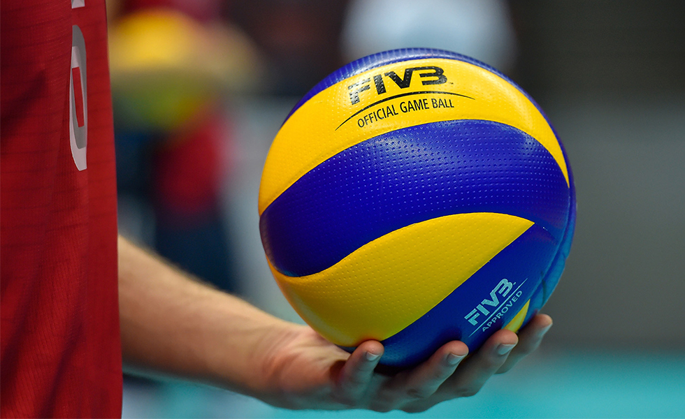

Modalidade esportiva
Vôlei
O vôlei foi inventado em 1895 por William G. Morgan, nos Estados Unidos. Chamado inicialmente de “mintonette”, foi pensado como uma atividade com menos contato físico; o nome volleyball surgiu pouco depois.

Modalidade esportiva
O vôlei foi inventado em 1895 por William G. Morgan, nos Estados Unidos. Chamado inicialmente de “mintonette”, foi pensado como uma atividade com menos contato físico; o nome volleyball surgiu pouco depois.